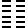
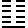
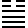
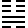
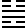
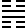

【彖傳系列文章】
凡例：
- 《彖傳注》旨在拆解《彖傳》解經的邏輯與義理，因此關於《彖傳》中所引的《周易》經文，並不處理。《彖傳》若有引用經文，關於經文的注解，請參考《易經今解》或《周易全解》。
- 關於「治卦主爻」與「成卦主爻」請參考爻象全攻略一文。
- 關於旁通，可參考旁通古法的重建 I—從漢易到焦循、旁通古法的重建 II—新的旁通法則。
- 關於卦變，可參考從旁通、卦變，到六十四卦 I--卦變理論的發展、從旁通、卦變，到六十四卦 II--卦變理論的修正。
1.  大哉乾元，萬物資始，乃統天。雲行雨施，品物流形，大明終始，六位時成，時乘六龍以御天。乾道變化，各正性命，保合大和，乃利貞。首出庶物，萬國咸寧。
大哉乾元，萬物資始，乃統天。雲行雨施，品物流形，大明終始，六位時成，時乘六龍以御天。乾道變化，各正性命，保合大和，乃利貞。首出庶物，萬國咸寧。
大哉乾元，萬物資始，乃統天：解釋「元」。
大哉乾元：《九家易》：「陽稱大。六爻純陽，故曰大。乾者純陽，眾卦所生，天之象也。觀乾之始，以知天德，惟天為大，惟乾則之，故曰大哉。元者，氣之始也。」
《文言傳》：「元者善之長也。」周易六十四卦只有乾坤兩卦符合「善之長」的條件，因此《彖傳》分別以「大哉乾元」，「至哉坤元」讚嘆兩卦。《周易》以陽為大，陰為小，大即乾卦之別稱。
萬物資始，乃統天：荀爽：「謂分為六十四卦，萬一千五百二十策，皆受始於乾也。策取始於乾，猶萬物之生稟於天。」《九家易》：「乾之為德，乃統繼天道，與天合化也。」
乾陽為萬物生命藉以開始的元氣，因此說「萬物資始」。《易經》六十四卦總計384爻，384爻共有11520策，以成萬之數象徵天地間的萬物。乾坤生11520策，象徵陰陽演生萬物。乾卦象徵天道，因此說「乃統天」。
11520策算法：384爻有一半為陰，一半為陽。陽爻得數為9（或7），陰爻得數為6（或8）。揲蓍法中筮數計算為每數有四策（揲之以四），九之數為36策，八之數為32策，七之數為28策，六之數為24策。
傳統以六為陰，九為陽，384爻總策數為：
6 x 4 x (384/2) + 9 x 4 x (384/2) = 11520
若以新出土資料來驗證，當以七為陽，八為陰，384爻總策數為：
7 x 4 x (384/2) + 8 x 4 x (384/2) =11520
雲行雨施，品物流形。大明終始，六位時成，時乘六龍以御天：解釋「亨」。《文言傳》：｢亨者嘉之會。」嘉會而亨，具體而言，乾之嘉會有二，一是旁通而與坤嘉會。二是六位之時成，乾元與爻位（六位）之嘉會。《文言傳》：「六爻發揮，旁通情也。」荀爽：「乾起坎，而終於離。坤起於離，而終於坎。離坎者，乾坤之家，而陰陽之府，故曰大明終始也。」「六爻隨時而成乾。」
雲行雨施，品物流形：虞翻：「已成既濟，上坎為雲，下坎為雨，故雲行雨施。乾以雲雨，流坤之形，萬物化成，故曰品物流形也。」益卦《彖傳》：「天施地生。」若依虞翻註解，應該改成「已成既濟、未濟」，上坎為雲是為既濟，下坎為雨是為未濟。上坎為雲下坎為雨是《大象傳》的取象，《彖傳》並不如此區分，《彖傳》屯、解兩卦的註解可為證。
天道博施，地道廣生。雲行雨施講的是天道博施，品位流形則是坤承天道而廣生，萬物流動而賦形，滋長而繁茂。傳統易學家有一種理論認為，《周易》中雨象徵的是陰陽調和，這是就結果上來說。就原因來說，雨象徵的是乾天陽氣在地上的流形。這是「天施地生」的過程。就卦之演變來說，乾坤旁通尚未成既濟和未濟的歷程，在此歷程中先成復與小畜、豫與姤，再成屯與家人、解與鼎。屯與解兩卦為坤體受陽，就是「雲行雨施，品物流形」的兩卦，屯與解卦彖傳分別說「雷雨之動滿盈，天造草昧」、「天地解而雷雨作，雷雨作而百果草木皆甲坼」。小畜卦彖傳說：「剛中而志行，乃亨。密雲不雨，尚往也；自我西郊，施未行也。」「志行」講的是九二勢在必行，將與復卦旁通，成屯卦而成「天施地生」之功。「密雲不雨，尚往也」指的是乾卦九四已行成復，但九二未行而尚未「雲行雨施」，即後文講的「施未行」。因此「尚往」，宜往而施行，往則雲行雨施，品物流形。
大明終始，六位時成，時乘六龍以御天：孟喜：「天子駕六。」古代天子馬車駕六典故源自於此。乾為大明，六爻皆陽，即大明終始，終始乃有始有終之義。六位時成者，乾道因時而變。《孟子萬章篇》：「孔子，聖之時者也。」筮者數也，《周易》乃占筮之書，古代以筮數為占。帛書《易之義》：「鍵也者八卦之長也，九也者六肴之大也。為九之狀，浮首兆下，蛇身僂曲，亓為龍類也。」《周易》的龍取象自筮數九，並以九象徵乾道之變化。九在六爻因時而變，即六位時乘。
乾道變化，各正性命，保合大和，乃利貞：解釋｢利貞｣。乾道即天道，天道的變化在於讓生命各得其所，有利於萬物，萬物因此皆得生命之正。萬物皆因得利於天道而可貞定正固，即利貞。大，通太。大和，即太和。
首出庶物，萬國咸寧：劉瓛：「陽氣為萬物之所始，故曰首出庶物。立君而天下皆寧，故曰萬國咸寧也。」庶者眾也，庶物即萬物。乾為萬物大始，故曰「首出庶物」。
《彖傳》的這段註解在《文言傳》中也有所詮釋：「乾元者，始而亨者也。利貞者，性情也。乾始而以美利利天下，不言所利，大矣哉。大哉乾乎，剛健中正，純粹精也。六爻發揮，旁通情也。時乘六龍，以御天也。雲行雨施，天下平也。」萬國咸寧，可能講的是乾坤旁通成屯與家人，《彖傳》屯卦：「宜建侯而不寧。」不寧者，丕寧。家人卦：「正家，而天下定矣。」
2.  至哉坤元，萬物資生，乃順承天。坤厚載物，德合无疆，含弘光大，品物咸亨。牝馬地類，行地无疆，柔順利貞。君子攸行，先迷失道，後順得常。西南得朋，乃與類行。東北喪朋，乃終有慶。安貞之吉，應地无疆。
至哉坤元，萬物資生，乃順承天：解釋「元」，讚嘆坤道廣生之德。至，極至，無所不至。天施地生，乾道博施，坤道承順天道，廣生萬物，因此說「萬物資生，乃順承天」。
坤厚載物，德合无疆。含弘光大，品物咸亨：解釋「亨」。
品，類也。品物，萬物。咸亨，皆亨。坤道之廣生，在於能夠承順天道，「含弘光大」因「乃順承天」，乾為光為大。弘為大。此即乾卦《彖傳》講的「雲行雨施，品物流形」。荀爽：「乾二居坤五為含，坤五居乾二為弘，坤初居乾四為光，乾四居坤初為大也。」依荀爽注解，含弘光大指的是乾坤旁通而成屯與家人。
牝馬地類，行地无疆，柔順利貞：解釋「利牝馬之貞」。坤為陰為地，因此以地上跑的母馬作隱喻。乾為天，以飛龍為喻。侯果：「地之所以含弘物者，以其順而承天也。馬之所以行地遠者，以其柔而伏人也。而又牝馬，順之至也。誡臣子當至順，故作易者取象焉。」
君子攸行，先迷失道，後順得常：解釋「君子有攸往，先迷後得」。這段經文似乎與乾坤的旁通有關。乾卦《彖》講「雲行雨施，品物流行」，坤《彖》則講旁通的兩段歷程。乾四至坤初成小畜與復卦，坤初至乾體成小畜這是「先迷」，因為迷路，所以小畜卦講的都是「復」（回家，迷途知返）之事。小畜九二再到復五，復六五到小畜二，成家人與屯卦為後得。因此《彖傳》家人卦：「女正位乎內，男正位乎外，男女正，天地之大義也。家人有嚴君焉，父母之謂也。父父，子子，兄兄，弟弟，夫夫，婦婦，而家道正。正家，而天下定矣。」屯卦：「雷雨之動滿盈，天造草昧，宜建侯而不寧。」屯卦為坤體受乾，為雲行雨施而天造草昧。家人卦為乾體受坤，為坤陰先迷後得而家道正之卦。
西南得朋，乃與類行。東北喪朋，乃終有慶：坤為西南之卦，又為朋象，因此往西南則得其朋，往相反的東北方為喪朋。另外也可以旁通來解釋。「西南得朋，乃與類行」是乾四將之坤初成復與小畜，乾四至坤初即西南得朋，因此復卦說「朋來无咎」。「東北喪朋，乃終有慶」則是指乾上將之坤三成謙與夬，夬即訣別之義，而謙即東北喪朋之象，蓋因下艮為東北，上坤為朋，艮在內為拒止之義。謙卦又曰「君子有終」，此「乃終有慶」。
安貞之吉，應地无疆：解釋「安貞吉」。「應地无疆」即前文所說「坤厚載物，德合无疆」。
3. 屯，剛柔始交而難生，動乎險中，大亨，貞。雷雨之動滿盈，天造草昧，宜建侯而不寧。
剛柔始交而難生：剛柔即陰陽。剛柔交即乾坤交，天地交。《彖》泰卦：「天地交而萬物通也。」否卦：「天地不交而萬物不通也。」剛柔始交即天地始交，乾《彖》「雲行雨施，品物流形」講的就是乾坤旁通始交而生萬物，萬物在《周易》中即六十四卦的11520策。關於旁通，請參考乾卦《彖傳》註解。屯乃乾坤始交而萬物生的一卦。「難」字一語雙關，既是開天闢地的困難，也是萬物繁茂之義。朱熹以下卦震為剛柔始交，上卦坎為難生。於象而言，亦可通。
難為難易之難，困難之義。但也有茂盛的意思。《詩·小雅》「其葉有難」。《傳》：「難然盛貌。」難亦通儺，為古代消災解厄之儀式，《周禮·春官·占夢》：「遂令始難歐疫。」《夏官·方相氏》：「率百隸而時難，以索室驅疫。」《禮記·月令》：「季春，命國難。」「季冬命有司大難。」
動乎險中：以上下二體的卦德解釋屯卦。屯卦下震動，上坎險，乃動乎險中之象。
大亨貞：經文作「元亨利貞」，《彖傳》解釋少了「利」字，或有脫誤。
雷雨之動滿盈，天造草昧：以上下二體卦象解釋屯卦，下震為雷，上坎為雨，卦象為雷雨之動。《彖傳》坎卦不分上下，皆取象為水，《大象傳》則以上坎為雲，下坎為水，因此《大象傳》說「雲雷屯」，需卦則說「雲上於天」。滿盈，形容萬物始生而繁茂之狀，充滿於天地之間，因此說「滿盈」。屯亦有盈滿之義，《序卦傳》：「屯者盈也，屯者物之始生也。」天造草昧，形容乾天造物，萬物繁茂而蒙昧之狀。
宜建侯而不寧：宜於建立諸侯。不寧有兩種不同的解釋，一是內心不得安寧。因處天造草昧之時，因此忙於建立諸侯以治亂，內心不得安寧。其次是作「丕寧」，大寧之義。建立諸侯，萬邦得以治理而安寧。
4.  蒙，山下有險，險而止，蒙。蒙，亨，以亨行，時中也。匪我求童蒙，童蒙求我，志應也。初筮告，以剛中也。再三瀆，瀆則不告，瀆蒙也。蒙以養正，聖功也。
蒙，山下有險，險而止，蒙。蒙，亨，以亨行，時中也。匪我求童蒙，童蒙求我，志應也。初筮告，以剛中也。再三瀆，瀆則不告，瀆蒙也。蒙以養正，聖功也。
山下有險，險而止，蒙：以上下二體卦象解釋卦義。蒙卦上為艮山，下為坎險，卦象為山下有險。險而止則是以二體的卦德解釋蒙，蒙為遇險而止。
蒙，亨，以亨行，時中也：解釋經文「蒙亨」。蒙卦之所以亨，因為以亨行，時中。這是以主爻來解釋蒙卦。主爻乃一卦之主，符合亨行、時中描述的只有九二。蒙為乾坤旁通成未濟過程所產生的卦，先是乾四至坤上成履和剝，再由履九五與剝六二交換成睽與蒙，因此蒙卦主爻九二乃是由履九五而來，履九五至剝二成蒙卦就是亨行與時中。荀爽：「此本艮卦也。」是以蒙卦為艮卦九三降二而來。
匪我求童蒙，童蒙求我，志應也：坎為志，志應指六五應於九二之志。艮為童蒙，我為九二。蒙卦乃童蒙求明之卦，九二為陽為明。
初筮告，以剛中也：筮為以蓍草求問於神明。剛中指的是九二。初次筮問則神明有所告，因為九二剛中陽明，初六與九二比應。
再三瀆，瀆則不告，瀆蒙也：六三不當位，又乘九二之剛，乃褻瀆之象。瀆蒙，褻瀆蒙道。
蒙以養正，聖功也：解釋經文「利貞」，言蒙卦當養正，乃符合聖人之功。艮卦在外為養，坎為律為正。《彖傳》以「眾正」釋「師貞」。蒙為養正之象，師則是眾正之象。五多功，九二與六五應。
5.  需，須也，險在前也。剛健而不陷，其義不困窮矣。需，有孚，光亨，貞吉，位乎天位，以正中也。利涉大川，往有功也。
需，須也，險在前也。剛健而不陷，其義不困窮矣。需，有孚，光亨，貞吉，位乎天位，以正中也。利涉大川，往有功也。
需，須也：須，䇓也，雨中等待的意思。《說文》：「需，䇓也。遇雨不進，止䇓也。从雨而聲。《易》曰：雲上於天，需。」
險在前也：卦象坎卦在上，險在前之象。
剛健而不陷，其義不困窮矣：以上下二體卦象解釋需卦卦義。乾剛健，坎在內為坎陷，在外為不陷。《序卦》：「坎者陷也。」《說卦》：「坎陷也。」需卦為君子剛健而不坎陷之義，因此說「其義不困窮」。此段也可能講需卦可再與明夷旁通成既濟。乾坤旁通，乾初與三至坤四與上，成需與明夷，需九二再至明夷五成既濟定。因九二將行至明夷上卦坤中，因此講其義不困窮。至既濟則說：「剛柔正而位當也。初吉，柔得中也，終止則亂，其道窮也。」既濟《彖》傳顯然以六二為成卦之主爻，並以「其道窮」言之。
需，有孚，光亨，貞吉，位乎天位，以正中也：此以九五主爻解釋經文「需，有孚，光亨，貞吉」。九五為需卦主爻，居於五的天位，居上卦之中而當位，因此說「以正中也」。
利涉大川，往有功也：坎為大川。大川在外，剛健在內，為剛健而不坎陷之義。宜於涉大川，因前往將有功。五多功，九五中正剛強而不陷，因此往有功。
6.  訟，上剛下險，險而健，訟。訟有孚，窒惕，中吉，剛來而得中也。終凶，訟不可成也。利見大人，尚中正也。不利涉大川，入于淵也。
訟，上剛下險，險而健，訟。訟有孚，窒惕，中吉，剛來而得中也。終凶，訟不可成也。利見大人，尚中正也。不利涉大川，入于淵也。
上剛下險，險而健：上下二體卦象解釋訟卦卦義。上乾為剛，下坎為險。訟卦為上剛下險，險而健之象。
訟有孚，窒惕，中吉，剛來而得中也：解釋經文「訟有孚，窒惕，中吉」，因剛來而得中。剛來而得中指九二，訟卦自遯卦而來，遯九三下降至二為剛來。
終凶，訟不可成也：解釋經文「終凶」，因訴訟不可成。
利見大人，尚中正也：此以九五解釋利見大人。九二「剛來而得中」為訟卦成卦之主爻。九五當位中正，為治卦之主爻。
不利涉大川，入于淵也：坎在內為坎陷之象。坎為大川，大川在內為坎陷，因此不利涉大川。反之，需卦為利涉大川，剛健而不陷。
7.  師，眾也，貞，正也，能以眾正，可以王矣。剛中而應，行險而順，以此毒天下，而民從之，吉又何咎矣。
師，眾也，貞，正也，能以眾正，可以王矣。剛中而應，行險而順，以此毒天下，而民從之，吉又何咎矣。
師，眾也，貞，正也，能以眾正，可以王矣：解釋經文「師貞」。坎在下為正，蒙卦《彖》曰「蒙以養正」，師卦曰「眾正」，可為證。艮山在外為養，故蒙卦說養正。師卦上坤為眾，坎在下為正，故曰眾正。師原義為軍隊，2500人曰師，引申為眾。軍隊最大的單位為軍，其次為師，師下為旅。師者，取其中。《彖傳》一向以「正」解釋貞，正為正邪的正。此言，能夠使眾人為正，則可以成王。
剛中而應：此指師卦之主爻九二，九二剛中而應六五之君。師卦為乾坤旁通而來，乾九五至坤六二，成大有與師。此亦有眾正之象。
行險而順：上下二體之卦德釋卦義。下坎為險，上坤為順，為行險而順之象。
以此毒天下，而民從之，吉又何咎矣：毒，通篤。毒天下，篤厚天下。此，指前文所言「剛中而應，行險而順」之美德。能夠以此美德篤厚天下，人民都會順從於他，因此而吉。得吉之後，怎麼會有罪咎。此以「吉」為「无咎」之條件，吉而後乃得无咎。
8.  比，吉也。比，輔也，下順從也。原筮元永貞，无咎，以剛中也。不寧方來，上下應也。後夫凶，其道窮也。
比，吉也。比，輔也，下順從也。原筮元永貞，无咎，以剛中也。不寧方來，上下應也。後夫凶，其道窮也。
比，吉也。比，輔也，下順從也：解釋比卦經文「比吉」以及比卦卦義。比為親比之義，引申為輔助，下輔助上，因此說「下順從也」。此亦是上下二體卦象，因坤為眾為順，坤在下為下順從之象。
原筮元永貞，无咎，以剛中也：指九五爻。九五具陽剛而中正的美德，因此原筮元永貞无咎。
不寧方來，上下應也：上指九五，下為六二。九五與六二相應，為上下應。下坤為方（方國），坎為憂心為不寧，因此曰不寧方來。不寧方，不安寧之方國。
後夫凶，其道窮也：後夫，指上六。上位為窮，又乘九五之剛，因此為凶。這也可能講的是乾坤旁通的原則。總和《彖傳》旁通之例，乾坤三次交換可以得既濟或未濟。二、五先行則貞定，一與四，三與上等爻便不再交換。由於比卦是乾二至坤，因此不再繼續旁通，故曰其道窮。
9. 小畜，柔得位而上下應之，曰小畜。健而巽，剛中而志行，乃亨。密雲不雨，尚往也；自我西郊，施未行也。
小畜，柔得位而上下應之，曰小畜：以主爻解釋小畜卦義。小畜是由乾坤旁通而來，乾卦九四至坤初，成小畜與復。小畜六四為坤初六而來，當位而與初九相應，又與九五比應，因此曰「柔得位而上下應之」。小為陰，小畜即陰畜，指坤初六之陰畜於乾體之四。而乾四至坤初則成復，復者陽之復也。因此乾四與坤初的旁通分別形成「陽復」與「陰畜」兩卦。
健而巽：上下二體之卦德，下乾剛健，上為巽。
剛中而志行，乃亨：指九二，剛中而志在必行乃能亨通。小畜再與復旁通，九二之復五成屯，屯卦則「雷雨之動滿盈」，乾陽雲行雨施而亨通。
密雲不雨，尚往也：九二未行，因此密雲不雨。九二往復五成屯則成雨，因此曰「尚往」。
自我西郊，施未行也：六四互體兌為西，故曰自我西郊。施未行，施指的是乾卦的「雲行雨施」，因九二未至復六二，尚未成屯卦之雨，成屯則「雷雨之動滿盈」為雲行雨施。九二未行而未能「雲行雨施」，因此言施未行也。
10. 履，柔履剛也。說而應乎乾，是以履虎尾，不咥人，亨。剛中正，履帝位而不疚，光明也。
柔履剛也：此以主爻六三解釋履卦卦義。六三乘九二之剛，為柔履剛之象。
說而應乎乾，是以履虎尾，不咥人，亨：以上下二體卦德解釋履卦經文。說者悅也，指六三，六三為下卦兌之主爻，因此可代表整個兌卦。六三與上卦乾之上爻相應，因此說「說而應乎乾」。下兌與上乾相應，因此能夠履虎尾而不咥人，得亨。六三為履卦成卦之主爻，由乾坤旁通而來，坤上六至乾三，成履與剝。
剛中正，履帝位而不疚，光明也：剛中正指九五，九五為履卦治卦之主爻。上乾為君，五亦是君位，因此說履帝位。乾為光為大明，因此說光明。疚，病也。
11.  泰，小往大來，吉亨，則是天地交而萬物通也，上下交而其志同也。內陽而外陰，內健而外順，內君子而外小人。君子道長，小人道消也。
泰，小往大來，吉亨，則是天地交而萬物通也，上下交而其志同也。內陽而外陰，內健而外順，內君子而外小人。君子道長，小人道消也。
小往大來，吉亨：重述經文。乾陽為大，坤陰為小。坤陰在外為小往，乾陽在內為大來。
則是天地交而萬物通也，上下交而其志同也：以上下二體卦象解釋經文。乾為天，坤為地。乾天原本在上，陽氣由上而下行。坤地原本在下，陰氣由下而上，此為天地交之象。天地交則萬物通。上指乾陽，下指坤陰。天地交即上下交，此就人倫而言，上下若能交，則一氣相通而志同。易者交易、變易也，易經講的是陰陽交易、變易之道。卦象、陰陽有交易，有變易則萬物生，萬事通泰，沒交易沒變易則天地閉塞，萬事不通。這個原則可從泰否兩卦清楚看出，並貫穿六十四卦。
內陽而外陰，內健而外順，內君子而外小人：此進一步發揮闡述泰卦之上下二體的卦象。乾陽在內，坤陰在外，故曰「內陽而外陰」。乾卦剛健，坤卦柔順。乾為君子，坤為眾為小人，故曰「內健而外順，內君子而外小人」。內、外有兩種解釋方式。一是空間的內外，內卦為陽為健為君子，外卦為陰為順為小人。內外也可做動辭，內為接納、容納，外為排除。接納陽氣、剛健之德、君子。排除陰氣、柔順之德，小人。
君子道長，小人道消也：此就陰陽消息而言泰卦卦象。泰卦為陰陽消息而來。乾坤先是旁通而成復與小畜，復卦開始進入陰陽消息循環，首先是增加一陽而成臨卦，臨卦再增一陽成泰。因此泰卦是陽氣增長，陰氣消退之卦。陽為君子，陰為小人，此為君子道長，小人道消之象。泰卦也是三陽三陰之卦卦變的開始。
12. 否之匪人，不利君子貞，大往小來，則是天地不交而萬物不通也，上下不交而天下无邦也。內陰而外陽，內柔而外剛，內小人而外君子。小人道長，君子道消也。
否之匪人，不利君子貞，大往小來：重述經文。否卦為乾陽在外，坤陰在內。乾陽為大，在外為往。坤陰為小，在內為來。因此說「大往小來」。
則是天地不交而萬物不通也，上下不交而天下无邦也：以上下二體卦象解釋經文。乾為天，坤為地。乾天尊貴而停留在上，陽氣未能下降。坤地卑而停留在下，陰氣未能上行，此為天地不交之象。天地不交則萬物閉塞不通。否即閉塞不通之意。天尊地卑，天地不交即上下不交，此就人倫而言，上下不能交，則天下大亂而無邦。
內陰而外陽，內柔而外剛，內小人而外君子：此進一步發揮闡述否卦之上下二體卦象。坤陰在內，乾陽在外，故曰「內陰而外陽」。內坤卦為柔順，外乾卦為剛健。內坤卦為眾為小人，外乾卦為君子，故曰「內柔而外剛，內小人而外君子」。
小人道長，君子道消也：此就消息卦而言否卦卦象。否卦為陰長陽退而來。遯卦再增一陰而成否，因此否卦是陰氣增長，陽氣消退之卦。陽為君子，陰為小人，此為小人道長，君子道消之象。否卦也是三陰三陽之卦卦變的開始。
13.  同人，柔得位得中而應乎乾，曰同人。同人曰，同人于野，亨，利涉大川，乾行也。文明以健，中正而應，君子正也，唯君子為能通天下之志。
同人，柔得位得中而應乎乾，曰同人。同人曰，同人于野，亨，利涉大川，乾行也。文明以健，中正而應，君子正也，唯君子為能通天下之志。
柔得位得中而應乎乾，曰同人：以主爻六二解釋同人卦。六二當位，故曰得位。六二亦是下卦離之主爻，與上面乾卦的九五爻相應，故曰應乎乾。
同人曰，同人于野，亨，利涉大川，乾行也：此以旁通解釋經文。同人卦是乾坤旁通而來，乾卦九二至坤五，成同人與比。乾卦九二至坤五即「乾行」，乾行成比卦上坎，坎為大川，坎在外為剛健而不陷，因此曰利涉大川。乾九二至坤五，五為野，坤為眾人，君子與眾人會見於野，故曰同人于野。
文明以健：以上下二體的卦德解釋同人。內離為文明，外乾為剛健。
中正而應，君子正也：九五為中正。六二為同人卦成卦之主爻，九五為治卦之主爻，兩爻相應。九五居中而當位，故曰中正。乾為君子，九五中正，君子正之象。
唯君子為能通天下之志：九五與六二相應。或者指乾坤旁通，乾九二至坤五，為通天下志。
14.  大有，柔得尊位大中，而上下應之，曰大有。其德剛健而文明，應乎天而時行，是以元亨。
大有，柔得尊位大中，而上下應之，曰大有。其德剛健而文明，應乎天而時行，是以元亨。
得尊位大中，而上下應之，曰大有：以六五主爻解釋大有卦。大有為乾坤旁通而來，乾卦九五至坤二，成大有與師。六五雖柔，居五之尊位又得中，下應九二，與上九比應，故曰「得尊位大中而上下應之」。
其德剛健而文明：以上下二體的卦德解釋大有。內乾為剛健，外離為文明。
應乎天而時行，是以元亨：以六五爻解釋「元亨」。六五與下卦乾天相應，為應乎天。與上九比應，亦是應乎天。時行者，乾九五至坤二，成大有與師。
15.  謙亨，天道下濟而光明，地道卑而上行；天道虧盈而益謙，地道變盈而流謙；鬼神害盈而福謙，人道惡盈而好謙。謙尊而光，卑而不可踰，君子之終也。
謙亨，天道下濟而光明，地道卑而上行；天道虧盈而益謙，地道變盈而流謙；鬼神害盈而福謙，人道惡盈而好謙。謙尊而光，卑而不可踰，君子之終也。
謙亨，天道下濟而光明，地道卑而上行：以旁通解釋「謙亨」。謙卦為乾與坤旁通而來，乾上九至坤三，成謙卦與夬。乾為天，上九至坤三成謙為天道下濟而光明。坤三至乾上成夬，為地道卑而上行。
天道虧盈而益謙，地道變盈而流謙；鬼神害盈而福謙，人道惡盈而好謙：闡述「謙受福，滿招損」之義，無論天道、地道、鬼神之道，還是人道，都是惡盈而好謙。盈者滿也。天道虧盈而益謙，天道會虧損盈滿者，而增益謙虛者，如日中則昃，月滿則虧。地道變盈而流謙，如山高谷深。鬼神害盈而福謙，鬼神傷害盈滿之人，造福謙虛者。人道惡盈而好謙，人道厭惡盈滿之人，喜愛謙虛者。
就卦象而論，謙卦乃乾卦虧其上爻而成，乾卦上九至坤三成謙，乾體變成夬，夬者缺也虧也。因此乾上至坤三成謙，即天道虧盈而益謙之象。
謙尊而光，卑而不可踰，君子之終也：謙虛反而得到尊貴而發光，卑下反而讓人無法踰越，這也是君子之終。
16.  豫，剛應而志行，順以動，豫。豫順以動，故天地如之，而況建侯行師乎？天地以順動，故日月不過，而四時不忒。聖人以順動，則刑罰清而民服。豫之時義大矣哉。
豫，剛應而志行，順以動，豫。豫順以動，故天地如之，而況建侯行師乎？天地以順動，故日月不過，而四時不忒。聖人以順動，則刑罰清而民服。豫之時義大矣哉。
剛應而志行：以九四主爻解釋豫卦。九四陽剛，與初六相應，為剛應。互體坎為志，上卦震為行，有志行之象。但志行也可能是就旁通而言。豫卦為乾坤旁通而來，乾初九至坤四，成豫與姤。姤九五將成豫二成解與鼎。志行，或言豫六二將至姤五，姤五將至豫二。
順以動，豫：以上下二體卦德解釋豫。下坤為順，上震為動，豫為順以動之象。
豫順以動，故天地如之，而況建侯行師乎：以卦德解釋經文「豫，利建侯、行師」。言天地之運行亦如豫卦卦德，更何況是建侯行師。
天地以順動，故日月不過，而四時不忒：天地如豫之卦德以順動，所以日月之運傳不會有過錯，四時之消息不會有差錯。忒，差錯。
聖人以順動，則刑罰清而民服：聖人如豫之卦德以順動，則刑罰清明而人民服從。
豫之時義大矣哉：《彖傳》以「時義」讚嘆者有四卦，豫、遯、姤，與旅。其中豫和姤為乾坤旁通時同時生成的兩卦，乾初九至坤四，成豫與姤。
17.  隨，剛來而下柔，動而說，隨。大亨，貞，无咎，而天下隨時，隨時之義大矣哉。
隨，剛來而下柔，動而說，隨。大亨，貞，无咎，而天下隨時，隨時之義大矣哉。
剛來而下柔：以初九主爻解釋隨卦。隨卦是否卦卦變而來，否卦上九至初，初六至上，而成隨。剛來而下柔，指否卦上九下降成隨卦初九，下於六二與六三兩個柔爻。
動而說，隨：以上下二體卦義解釋隨卦卦義。
大亨，貞，无咎，而天下隨時：經文「元亨利貞」，但《彖傳》只解釋「大亨貞」，缺一利字，與屯卦同。此或有訛誤。依朱熹，「天下隨時」當作「天下隨之」。朱熹：「王肅本時作之，今當從之。釋卦辭，言能如是，則天下之所從也。」此擴大詮釋隨之卦義，能大亨貞而无咎，則天下將隨從之。
隨時之義大矣哉：朱熹：「王肅本時字在之字下，今當從之。」依朱熹，此句當作「隨之時義大矣哉」。
18.  蠱，剛上而柔下，巽而止，蠱。蠱元亨，而天下治也。利涉大川，往有事也。先甲三日，後甲三日，終則有始，天行也。
蠱，剛上而柔下，巽而止，蠱。蠱元亨，而天下治也。利涉大川，往有事也。先甲三日，後甲三日，終則有始，天行也。
剛上而柔下：以卦變解釋蠱卦。蠱卦是泰卦而來，泰初九至上為剛上，泰上六至初為柔下。
巽而止：以上下二體卦德解釋蠱卦。
蠱元亨，而天下治也：擴大解釋蠱卦之卦義，蠱（有事）而能大亨，則可以天下治。
利涉大川，往有事也：解釋經文「利涉大川」，因有事要前往。《序卦傳》：「蠱者事也。」
先甲三日，後甲三日，終則有始，天行也：泰卦初九至上成蠱，初至上為終則有始、天行之象。
19.  臨，剛浸而長，說而順，剛中而應，大亨以正，天之道也。至于八月有凶，消不久也。
臨，剛浸而長，說而順，剛中而應，大亨以正，天之道也。至于八月有凶，消不久也。
剛浸而長：以消息卦解釋臨卦。臨卦是消息卦而來，復卦剛長而成臨。浸，逐漸。
說而順：以上下二體卦德解釋臨卦。下兌說而上坤順，說而順之象。
剛中而應：以九二主爻解釋臨卦。臨卦為復卦剛長而來，此剛長之爻即九二。九二剛中而與六五相應，故曰剛中而應。
大亨以正，天之道也：大亨以正解釋元亨利貞。臨卦大亨以正，此乃天道。
至于八月有凶，消不久也：以陰陽消息解釋經文「至于八月有凶」。陽長陰退為息，陰長陽退為消。消不久，陰長陽退乃不久之事。臨為陽長之卦，若不久而陰長陽退，則是遭凶之時。
20.  大觀在上，順而巽，中正以觀天下。觀盥而不薦，有孚顒若，下觀而化也。觀天之神道，而四時不忒，聖人以神道設教，而天下服矣。
大觀在上，順而巽，中正以觀天下。觀盥而不薦，有孚顒若，下觀而化也。觀天之神道，而四時不忒，聖人以神道設教，而天下服矣。
大觀在上：九五主爻為大觀在上。觀有二義，一是諦視，仔細看，觀摩之義，讀做官。二是示人，朱熹所說的「有以示人而為人所仰也」，讀做灌。「大觀」在上應該是採第二義，乃上位者有以示人，在上而為人所觀仰。《爾雅·釋宮》：「觀謂之闕。」觀卦六畫大象象一艮，大型之門闕，為觀臺樓闕之象。
順而巽：以上下二體卦德解釋觀，下卦坤為順，上為巽，順而巽之象。
中正以觀天下：以九五主爻解釋觀卦，擴大引申大觀在上之義。九五處中而當位，具中正之德。下卦坤為邦國為眾人，九五大觀在上，有觀天下之象。
觀盥而不薦，有孚顒若，下觀而化也：解釋觀卦經文「觀盥而不薦，有孚顒若」。下觀而化，下四陰承九五之陽。此觀為諦視之義，音官。在下者諦視盥禮，虔誠而受教化。
觀卦為消息而來，否卦陽退陰長成觀。觀卦也是四陰二陽之卦卦變的開始。
21. 頤中有物，曰噬嗑。噬嗑而亨，剛柔分，動而明，雷電合而章，柔得中而上行，雖不當位，利用獄也。
頤中有物，曰噬嗑：此以六爻所構成之卦象解釋噬嗑卦。噬嗑為頤中有物之象。此「物」有兩種解釋，一是九四陽爻，陽為實。二是以互體坎為物。
噬嗑而亨，剛柔分，動而明：剛柔分，以卦變解釋經文。噬嗑卦由否卦卦變而來，否卦九五降初，初六升至五，為剛柔分。動而明，上下二體卦德解釋卦義，下震為動，上離為明，為動而明之象。
雷電合而章：以上下二體卦象解釋卦義。下震為雷，上離為電，雷電合而章之象。章，美。
柔得中而上行，雖不當位，利用獄也：以主爻六五解釋經文。否卦初六上行至五而得中，雖然不當位，但柔中，因此利用刑獄。
22.  賁亨。柔來而文剛，故亨。分剛上而文柔，故小利有攸往，天文也。文明以止，人文也。觀乎天文，以察時變，觀乎人文，以化成天下。
賁亨。柔來而文剛，故亨。分剛上而文柔，故小利有攸往，天文也。文明以止，人文也。觀乎天文，以察時變，觀乎人文，以化成天下。
柔來而文剛，故亨：以卦變解釋賁亨。賁卦由泰卦而來，泰卦上六至二，文飾乾體兩剛爻而成離，因此曰柔來而文剛。
分剛上而文柔，故小利有攸往，天文也：以卦變解釋小利有攸往。泰卦九二與乾體分離，至上以文飾坤體之柔，成上體艮卦，故曰分剛上而文柔。上九自乾天而來，上也是天位，因此說天文也。
文明以止，人文也：以上下二體的卦德解釋卦義。賁卦下離為文明，上艮為止，為文明以止之象。
觀乎天文，以察時變，觀乎人文，以化成天下：進一步申論賁卦之啟示，觀察天文可以洞察時間、時機的變化。而觀察人文，君王可以藉以化成天下。
23. 剝，剝也，柔變剛也。不利有攸往，小人長也。順而止之，觀象也。君子尚消息盈虛，天行也。
柔變剛也：「柔變剛」傳統以消息卦解釋，認為是五柔將變化上九之剛而成坤。但依字義來看並不通順。柔變剛應該是指坤上六由柔變成剛，因剝卦乃乾坤旁通而來，乾三至坤上，使得坤上六柔變剛而成剝。坤上至乾三，乾變履。柔變剛也是後文所說的「天行」，乾天剛爻至坤上之天位。
不利有攸往，小人長也：此以消息卦解釋不利有攸往，因為剝卦也是消息卦中陽退陰長之卦，五柔將剝一陽，因此不利有攸往。消息卦中，陽長之卦利有攸往；反之，陽退陰長之卦為不例有攸往。如復、夬卦為陽長，曰利有攸往。剝為陽退陰長，曰不利有攸往。其餘消息卦可據以類推。
順而止之，觀象也：以上下二體卦德解釋剝卦。下卦坤為順，上卦艮為止，順而止之之象。
君子尚消息盈虛，天行也：剝卦既是旁通而來，也是十二消息卦。就消息來說，是觀卦陰長陽消而來，此乃消息盈虛之自然。就旁通來說，是坤卦上六柔變剛而成，有盈虛之象。此有如謙卦與夬卦關係，謙卦為坤三至乾上，乾上剛變柔，因此謙卦說「天道虧盈而益謙」，虧盈者，虛盈也。
24. 復，亨。剛反，動而以順行，是以出入无疾，朋來无咎。反復其道，七日來復，天行也。利有攸往，剛長也。復，其見天地之心乎。
剛反，動而以順行，是以出入无疾，朋來无咎：以初九主爻及上下二體卦德解釋經文「出入无疾，朋來无咎」。初九主爻為剛反之爻，剛反有兩種解釋。一是從陰陽消息而來，坤卦陽長，陽爻歸來，因此曰剛反。初九也可以旁通來解釋。乾卦九四至坤初成復，是為陽復、剛反於坤體，地下一陽動；坤初至乾四成小畜，為陰畜於乾體。陰為小，小畜者，陰畜也。剝卦和復卦《彖傳》都講「天行」，天行者，乾陽至坤體。剝卦為乾卦九三至坤上，復卦為乾卦九四至坤初。動而以順行為上下二體之卦德，下卦震為動，上卦坤為順。朋來无咎，坤為朋，震為來，復卦即朋來之象。
反復其道，七日來復，天行也：以「天行也」解釋經文「反復其道，七日來復」。傳統以消息卦解釋「七日」，因自乾至復剛好歷經七個階段：姤、遯、否、觀、剝、坤，復。
利有攸往，剛長也：以剛長解釋「利有攸往」。就陰陽消息來說，復卦為剛長之卦，坤卦剛長而來。復之後又剛長成臨。
25. 无妄，剛自外來而為主於內，動而健，剛中而應，大亨以正，天之命也，其匪正有眚，不利有攸往。无妄之往，何之矣。天命不祐，行矣哉。
剛自外來而為主於內：以卦變解釋初九主爻。无妄卦是從遯卦而來，遯九三下降之初，成為主爻，因此說「剛自外來而為主於內」。周易原本以上面三爻為外，下面三爻為內，此卦的內外，是初與三的相對應關係。三為外，初為內。
動而健：以上下二體卦德解釋卦義。无妄卦下震為動，上乾剛健，動而健之象。
剛中而應：九五剛中，為治卦之主爻，與六二相應。
大亨以正，天之命也：解釋元亨利貞，大亨以正即元亨利貞。
无妄之往，何之矣。天命不祐，行矣哉：解釋經文「不利有攸往」。鄭康成：「妄之言望，人所望宜正，行必有所望。行而无所望，是失其正，何可往也。」
26.  大畜，剛健篤實，輝光日新其德。剛上而尚賢，能止健，大正也。不家食吉，養賢也；利涉大川，應乎天也。
大畜，剛健篤實，輝光日新其德。剛上而尚賢，能止健，大正也。不家食吉，養賢也；利涉大川，應乎天也。
大畜剛健篤實輝光日新其德剛上而尚賢：有多種讀法。《孫氏周易集解》作：「大畜剛健，篤實輝光，日新其德，剛上而尚賢。」另可作：「大畜，剛健篤實，輝光日新，其德剛上而尚賢。」
剛健篤實，以上下二體解釋大畜卦義。下卦乾為剛健，上卦艮為篤實。
輝光日新其德，乾為大明，輝光之象。艮在外為養，大畜為畜養大明，故有輝光日新之義。
剛上而尚賢，以卦變解釋卦義。大畜為大壯卦變而來，大壯九四上升到上位成大畜，並成止健之象（能止健）。上艮為止，下乾為健。
不家食吉，養賢也：大畜為君子養於門下之象，養賢之義，因此不家食吉。
利涉大川，應乎天也：六五與九二相應，與上九比應。
27.  頤貞吉，養正則吉也。觀頤，觀其所養也；自求口實，觀其自養也。天地養萬物，聖人養賢以及萬民，頤之時大矣哉。
頤貞吉，養正則吉也。觀頤，觀其所養也；自求口實，觀其自養也。天地養萬物，聖人養賢以及萬民，頤之時大矣哉。
頤貞吉，養正則吉也：解釋經文「頤貞吉」。頤為養，貞為正。頤貞吉者，養正則得吉，不養正則凶。
觀頤，觀其所養也：解釋經文「觀頤」字義。鄭玄：「觀頤，觀其養賢與不肖也。」所養，指的是君子所養之人。觀察一個人養的都是雞鳴狗盜之徒，還是機智謀士，還是天下萬民，諸如此類的。君子所養，當以正為吉，此後文所言聖人養賢及萬民，才是君子之養正。
自求口實，觀其自養也：解釋經文「自求口實」。鄭玄：「頤中有物曰口實。自二至五有二坤，坤載養物，而人所食之物皆存焉。觀其求可食之物，則貪廉之情可別也。」自養，指的是自己如何養自己，觀察一個人如何自養，德行便可知。例如，自肥者貪，有所不取者廉，諸如此類的。
天地養萬物，聖人養賢以及萬民：承上「頤貞吉」以及「觀頤」而言。養萬物是天地之養正，養賢以及萬民則是聖人養正之事。
28.  大過，大者過也。棟橈，本末弱也。剛過而中，巽而說行，利有攸往，乃亨，大過之時大矣哉。
大過，大者過也。棟橈，本末弱也。剛過而中，巽而說行，利有攸往，乃亨，大過之時大矣哉。
大者過也：解釋大過義。鄭玄：「陽爻過也。」大為陽，大者過即陽者過。過，過錯。
棟橈，本末弱也：棟木彎曲，是因為本末羸弱。王弼：「初為本而上為末也。」向秀：「初為善始，末是令終。始終皆弱，所以棟橈。」本為下六，末為上六。陰者弱。巽為大木、宮室，兌為毀折，大過為大木、宮室毀壞之象，故曰棟橈。
剛過而中：所指是九二還是九五，未詳。虞翻認為是九二。個人竊疑，彖傳中另有一種陰陽交換模式，一次兩個爻，一爻在上卦，一爻在下卦。下爻當位則上爻不當位，下爻不當位則上爻不當位。相較之下，既濟定旁通模式所交換的兩爻一定都是不當位的，而未濟定路徑所交換的爻一定都是當位的。例如，大過卦是乾卦初、上兩爻和坤卦四、三兩爻交換而得。乾初到坤四，乾上至坤三，成小過。坤三至乾上，坤四至乾初，成大過。剛過而中，指的可能是乾卦初上兩爻越過到坤卦卦體之中，大象呈坎。而小過指的則是兩個陰爻過去乾體。彖傳與易經多有以六爻為一個大象的例子。像鼎卦，小過卦。
巽而說行，利有攸往，乃亨：以上下二體卦德解釋經文「利有攸往，亨」。大過下卦為巽遜，上卦為兌說，巽而說行之象。以巽遜而喜悅之態，則宜有所往，並得亨通。
29.  習坎，重險也。水流而不盈，行險而不失其信。維心亨，乃以剛中也；行有尚，往有功也。天險不可升也，地險山川丘陵也，王公設險以守其國，險之時用大矣哉。
習坎，重險也。水流而不盈，行險而不失其信。維心亨，乃以剛中也；行有尚，往有功也。天險不可升也，地險山川丘陵也，王公設險以守其國，險之時用大矣哉。
習坎，重險也：解釋卦名。習者鳥數飛，此處藉以描繪重坎之象，坎為險，因此說是重險。習又有習慣之義，因處於重坎而仍能心亨。
水流而不盈，行險而不失其信：以上下二體卦象解釋卦義。重坎即是水流而不盈滿之象。《易經》八純卦的上下二體都一樣，這樣的卦象都有「不止」的運行之義。所以乾卦《大象傳》說「天行健」，天行即描繪天體運行不止。坤卦《大象傳》說「地勢坤」，大地之綿延不絕。習坎乃水流不盈，行險而不止之義。陸績：「水性趨下，不盈溢崖岸也。月者水精，月在天，滿則虧，不盈溢之義也。」
維心亨，乃以剛中也：解釋經文「維心亨」，因為坎卦兩個陽爻都得中。
行有尚，往有功也：指九五。坎在外乃往有功之象，因九五中正而不陷，五多功。陽在坎中本是坎陷之象，但坎之險位在下，因此在下卦則九二為坎陷。若在上卦成九五，就不陷。如需《彖傳》：「利涉大川，往有功也。」蹇：「利見大人，往有功也。」
天險不可升也，地險山川丘陵也：上坎卦為天險，天險不可攀登踰越。升，登也。下坎卦為地險，地險則是山川丘陵之屬。
王公設險以守其國，險之時用大矣哉：此言坎險之時用，王公設置天險地險以守護他的國家。
關於坎離兩卦如何由乾坤而來，李挺之卦變圖以陰陽上交下交而來。個人竊疑，這是乾坤兩卦的二五交易而來，乾二之坤五，乾五之坤初，成離與坎。
30. 離，麗也。日月麗乎天，百穀草木麗乎土，重明以麗乎正，乃化成天下。柔麗乎中正，故亨，是以畜牝牛吉也。
離，麗也：荀爽：「陰麗於陽，相附麗也。亦為別離，以陰隔陽也。」離為附的意思，言陰附於陽。麗字以鹿之一對角表達成雙成對的意思，後又有形影不離之義。段玉裁《說文》注：「兩相附則為麗。」此以麗解釋離，當是取其附麗之義。
日月麗乎天，百穀草木麗乎土：日月附麗於天，百穀草木附麗於土。
重明以麗乎正，乃化成天下：雙重的光明（上下皆離）以附麗於正道，如此則可化成天下。
柔麗乎中正，故亨，是以畜牝牛吉也：以主爻解釋經文。六二爻為柔麗乎中正之象，所以亨通，畜養牝牛則吉。
31. 咸，感也。柔上而剛下，二氣感應以相與，止而說，男下女，是以亨，利貞，取女吉也。天地感而萬物化生，聖人感人心而天下和平。觀其所感，而天地萬物之情可見矣。
咸，感也：以感解釋咸卦卦義。
柔上而剛下，二氣感應以相與：以卦變解釋咸卦。咸卦是否卦而來，否卦原是陰陽不交，天地閉塞，否卦六三至上成咸之上六為柔上，上九至三為剛下。柔上剛下而天地之氣相互感應。相與，相互幫助，即爻象上的相應。咸卦六爻皆應，初六與九四、六二與九五，九三與上六皆應。
止而說，男下女，是以亨，利貞，取女吉也：以上下二體卦象解釋經文「亨利貞取女吉」。止而說為上下二體之卦德，下艮為止，上兌為說。男下女，少男艮下於少女兌，《周易》以男下於女為男女婚合之象。如漸卦少男下於長女為女歸吉。
天地感而萬物化生，聖人感人心而天下和平：闡述咸感之大義。天地因為相感而讓萬物化生，聖人因為聖德能夠感動人心而讓天下和平。
觀其所感，而天地萬物之情可見矣：仔細觀看所感動的是什麼，就可以看出天地萬物之性情。
32.  恒，久也。剛上而柔下，雷風相與，巽而動，剛柔皆應，恒。恒，亨，无咎，利貞，久於其道也。天地之道，恒久而不已也，利有攸往，終則有始也。日月得天而能久照，四時變化而能久成，聖人久於其道而天下化成，觀其所恒而天地萬物之情可見矣。
恒，久也。剛上而柔下，雷風相與，巽而動，剛柔皆應，恒。恒，亨，无咎，利貞，久於其道也。天地之道，恒久而不已也，利有攸往，終則有始也。日月得天而能久照，四時變化而能久成，聖人久於其道而天下化成，觀其所恒而天地萬物之情可見矣。
恒，久也：恒是長久之義。
剛上而柔下：以卦變解釋恒卦。恒卦是由泰卦而來，泰初九至四為剛上，六四至初為柔下。
雷風相與：以上下二體卦象解釋卦義，雷與風各爻皆相應，乃雷風相與之象。
巽而動：以上下二體卦德解釋卦義。恒卦下卦巽，上為震動。
剛柔皆應：恒卦六爻全部都相應。六十四卦只要上卦與下卦為陰陽相反之卦就會六爻相應，《周易》中有八個卦具備這樣的條件：泰與否，咸與恒，損與益，既濟與未濟。
恒，亨，无咎，利貞，久於其道也：因為能夠恒久於道，所以可得「亨，无咎，利貞」。
利有攸往，終則有始也：生生之謂易，恒卦恒常之道在於終則有始，循環不已，生生不息。此有如易經六十四卦，以未濟為終，因既濟為定而窮，未濟不定而能通，通則有始而循環不已。
日月得天而能久照，四時變化而能久成：日月得天道而能長久照明天下，四時因為變化而能夠長久成就萬物。
人久於其道而天下化成，觀其所恒而天地萬物之情可見矣：人因為恒久於天道，天下化成。觀恒常之道，就可見天地萬物之情。如日月之久照，四時之變化，乃天地之恒。
33.  遯亨，遯而亨也。剛當位而應，與時行也。小利貞，浸而長也。遯之時義大矣哉。
遯亨，遯而亨也。剛當位而應，與時行也。小利貞，浸而長也。遯之時義大矣哉。
遯亨，遯而亨也：解釋經文「遯亨」。遯為退的意思。遯而亨，退而能夠亨通。
剛當位而應，與時行也：以主爻九五解釋卦義。九五陽剛當位而得中，與六二相應，能與時而行者。
小利貞，浸而長也：以陰陽的消息解釋小利貞。浸，逐漸。浸而長，指的是陰氣。陰氣稱小，小利貞因為陰氣逐漸增長。遯卦是由姤卦陰氣增長而來。同時也是二陰四陽之卦卦變的開始。
34. 大壯，大者壯也，剛以動，故壯。大壯利貞，大者正也。正大而天地之情可見矣。
大壯，大者壯也：解釋大壯義。陽稱大，大者壯即陽氣壯。大壯卦為泰卦陽氣增長而來，因此為陽氣壯盛。大壯卦也是四陽二陰之卦卦變開始的一卦。
剛以動，故壯：以上下二體卦德解釋卦義。乾剛健，震為動，剛以動之象，所以稱壯。
大壯利貞，大者正也：解釋經文利貞，大者宜於正固。
35.  晉，進也。明出地上，順而麗乎大明，柔進而上行，是以康侯用錫馬蕃庶，晝日三接也。
晉，進也。明出地上，順而麗乎大明，柔進而上行，是以康侯用錫馬蕃庶，晝日三接也。
晉，進也：《說文》：「進也，日出萬物進也。」《序卦傳》晉卦和漸卦都以「進」來解釋，《彖傳》則對漸卦的「進」另有解說：「漸之進也，女歸吉也。進得位，往有功也，進以正，可以正邦也。」與晉卦陰陽相反的需卦《雜卦傳》則說：「需，不進也。」得需不可進，得晉則必需「自昭明德」，以進為宜。《象傳》：「明出地上，晉。君子以自昭明德。」
明出地上，順而麗乎大明：以上下二體解釋晉卦。下卦為坤為地，上卦離為明，晉卦為明出地上之象。「順而麗乎大明」則是以上下二體的卦德解釋卦義，下卦坤為順，上卦離為麗。大明為乾（離為明，乾為大明）。離乃陰附麗於乾體之卦，故曰「麗乎大明」。
柔進而上行：以卦變解釋晉卦。晉卦可能由旁通而來，亦可由卦變而來。若是旁通而來，為乾初至坤四，乾三至坤上，乾體成訟，坤體成晉。綜觀《彖傳》，除了無反對卦的坎離、頤大過、中孚小過之外，若二、五未行，那麼二陽四陰、四陰二陽，以及二陰四陽、四陽二陰之卦，可能會以卦變解釋，但沒有以旁通來解釋者。晉為四陰二陽之卦，若以卦變來看，乃觀卦而來，觀六四上行至五成晉，為柔進而上行。蜀才：「此本觀卦。」同理可推論，晉卦之後的明夷卦是臨卦而來。
36.  明入地中，明夷。內文明而外柔順，以蒙大難，文王以之。利艱貞，晦其明也。內難而能正其志，箕子以之。
明入地中，明夷。內文明而外柔順，以蒙大難，文王以之。利艱貞，晦其明也。內難而能正其志，箕子以之。
明入地中，明夷：以上下二體解釋卦義。明夷下卦為離，上卦為坤。離為光明，坤為地，是明入地中，光明隕落之象。
內文明而外柔順，以蒙大難，文王以之：以卦德解釋卦義，並以文王做比喻。內卦為離，有文明之德。外卦為坤，柔順之義。以文明之德而蒙大難（困於羑里），柔順處之，這是文王之明夷。荀爽：「明在地下，為坤所蔽，大難之象。大難，文王君臣相事，故言大難也。」
利艱貞，晦其明也：以上下二體卦象解釋經文「利艱貞」。坤為腹，離為明。明者聰明也。明夷乃明藏腹中，韜光養晦，晦其明之象。
內難而能正其志，箕子以之：「內難而能正其志」未知卦象基礎來自何處。虞翻以陰陽相反之旁通義來解釋，明夷陰陽相反為訟卦。虞翻：「箕子，紂諸父。故稱內難。五乾天位，今化為坤，箕子之象。坤為晦，箕子正之。出五成坎，體離，重明麗正。坎為志，故正其志，箕子以之，而紂奴之矣。」按：虞翻所講之旁通，指的是卦象之陰陽相反，即來知德所說的「錯」象。而不是指乾坤之陰陽交換歷程。
37.  家人，女正位乎內，男正位乎外，男女正，天地之大義也。家人有嚴君焉，父母之謂也。父父，子子，兄兄，弟弟，夫夫，婦婦，而家道正。正家，而天下定矣。
家人，女正位乎內，男正位乎外，男女正，天地之大義也。家人有嚴君焉，父母之謂也。父父，子子，兄兄，弟弟，夫夫，婦婦，而家道正。正家，而天下定矣。
女正位乎內，男正位乎外，男女正，天地之大義也：傳統諸儒以爻位來解釋這段文字，以陽為男，陰為女，謂家人卦中間四爻皆當位為男女正。但這樣的註解有很大的問題，《彖傳》中談爻者以剛柔稱之，談男女者當是與八卦卦象有關。此處的男女談的都是男女的卦象，但家人卦下為中女，上為長女，女正之象有了，男正之象呢？此卦互體只有一個坎，坎卦主爻九三在內。再者講互體則不具內外之義。因此這裡「男女正」的答案在旁通。
家人卦是乾坤旁通陰陽交換而來，先是乾四與坤初交換，得小畜和復，小畜九二再和復卦六五交換成家人和屯。屯乃坤體受陽，雲行雨施，天造草昧之卦。家人則是乾體受陰，男女正位而家道正之卦。一講天道，一講家道。兩卦則同是乾坤往既濟定發展過程當中乾陽與坤陰中行得位之卦：乾九二成屯卦九五尊位，坤六五成家人六二而中正。家人卦的男正乎外指的是小畜九五至復六成屯上之坎，女正位乎內則是指復六五至小畜二而成家人下卦之離。乾陽得九五多功之尊位君位，而坤陰得六二多譽之臣位，乾元坤元皆得中正。小畜乃陰畜而迷途之卦，坤卦講的「先迷」；家人則是迷而後反家之卦，坤卦講的「後得」。因此小畜六爻講的是「復」，回家的故事。復卦是陽氣之復（回家、歸來），但相對應的小畜是陰氣之迷途。陰氣之復（回家）則是在家人。復卦六五至小畜成家人之六二，此乃陰氣之「回家」，因此以家人為卦名。
家人有嚴君焉，父母之謂也：傳統以九五為父，六二為母。但也可以前述的卦變歷程來解釋。
父父，子子，兄兄，弟弟，夫夫，婦婦，而家道正：傳統以中間四爻皆當位來解釋。但以旁通歷程來解釋為佳。
38.  睽，火動而上，澤動而下，二女同居，其志不同行。說而麗乎明，柔進而上行，得中而應乎剛，是以小事吉。天地睽而其事同也，男女睽而其志通也，萬物睽而其事類也，睽之時用大矣哉。
睽，火動而上，澤動而下，二女同居，其志不同行。說而麗乎明，柔進而上行，得中而應乎剛，是以小事吉。天地睽而其事同也，男女睽而其志通也，萬物睽而其事類也，睽之時用大矣哉。
火動而上，澤動而下：以上下二體卦象解釋睽卦卦義。上卦離為火，火性炎上，因此曰火動而上。下卦兌為澤，澤水動則下行，因此曰澤動而下。此乃火澤違行之象，故曰睽。
二女同居，其志不同：以上下二體卦象解釋卦義。下卦兌為少女，上卦離為中女，兩女同居之象。兩個女卦的主爻六三與六五皆不當位，卦體又有水火違行之義，因此為二女同居，其志不同之象。
說而麗乎明：以上下二體卦德解釋卦義。下卦兌為說，上卦離為麗為明，為說而麗乎明之象。
柔進而上行，得中而應乎剛，是以小事吉：傳統以卦變解釋，例如虞翻說：「柔謂五，无妄巽為進。從二之五，故上行。」虞翻以睽卦從无妄而來，而无妄又是遯卦卦變而來。无妄二之五，為柔進而上行。個人認為，睽卦為乾坤旁通往未濟卦發展的陰陽交換歷程而來。乾三至坤上成履卦與剝卦，履五再至剝二，成睽與蒙。柔進而上行為剝二上行至履五而成睽，得中而應乎剛為六五與九二相應。
天地睽而其事同也，男女睽而其志通也，萬物睽而其事類也：這是就履卦與剝卦旁通而變為睽與蒙卦而言。天地睽為剝卦下體坤與履卦上卦乾，天地相睽違而能旁通，因此曰其事同。男女睽為履卦下卦少女，和剝卦上卦少男，兩卦為乾坤旁通而得，雖然相睽而能志通。男女睽也可視為睽卦上卦中女，與蒙卦下卦中男相睽，兩卦為乾坤旁通而來，因此曰其志通。蒙卦《彖傳》：「以亨行，時中也。匪我求童蒙，童蒙求我，志應也。」
39. 蹇，難也，險在前也。見險而能止，知矣哉。蹇，利西南，往得中也；不利東北，其道窮也。利見大人，往有功也；當位貞吉，以正邦也。蹇之時用大矣哉。
蹇，難也：以難解釋蹇卦卦義。
險在前也：以上下二體解釋蹇卦為何是難。坎險為難，卦象坎險在前，因此為難。
見險而能止，知矣哉：以上下二體卦德解釋蹇卦。坎險在前，下艮為止，止在險前，見險而能止之象，故曰智矣哉。知，智也。反之，蒙卦為止在險後，因此為童蒙，童蒙則不智。
蹇，利西南，往得中也；不利東北，其道窮也：坤為西南，蹇卦無坤，為何說利西難？雖有東北，但為何說不利東北？蹇卦是乾坤旁通往既濟發展過程當中，兩次陰陽交換而來。先是乾上之坤三，成夬和謙，謙卦上為坤為西南，下為艮為東北。「利西南，往得中也」指的是夬卦九二往謙之五，即謙卦上卦之坤中，而成蹇。在這一旁通過程當中，謙下東北（艮）已道窮，夬卦九二可中行而至謙上坤體（西南）而得中，但往艮體（東北）已無路可求通，因此曰「不利東北，其道窮也」。若東北再行，則成既濟。既濟《彖》曰：「終止則亂，其道窮也。」這段講的是乾坤兩卦的旁通原則，旁通可中行而貞定，但不可成既濟而定，成既濟定則道窮而亂。
利見大人，往有功也：蹇之主爻九五為夬九二而來，在旁通前為謙卦六五，謙六五至夬二成革，夬下卦乾為大人，故曰利見大人。夬九二至謙五變蹇，剛得中而成九五之尊，五多功，因此曰往有功。
當位貞吉，以正邦也：九五當位得正，因此曰當位貞吉。夬九二至謙上卦之坤中，坤為邦國，因此曰「以正邦也」。
40.  解，險以動，動而免乎險，解。解，利西南，往得眾也；其來復吉，乃得中也；有攸往夙吉，往有功也。天地解而雷雨作，雷雨作而百果草木皆甲坼，解之時大矣哉。
解，險以動，動而免乎險，解。解，利西南，往得眾也；其來復吉，乃得中也；有攸往夙吉，往有功也。天地解而雷雨作，雷雨作而百果草木皆甲坼，解之時大矣哉。
險以動，動而免乎險，解：以上下二體卦象解釋解卦。下坎為險，上震為動，險以動之象。坎來而動行，積極行動以逃避危險之象。
利西南，往得眾也；其來復吉，乃得中也：解卦卦象中沒有坤卦，為何說「利西南」？解卦是乾坤旁通而來，乾坤往未濟卦發展歷程中兩次陰陽交換而得。先是乾初至坤四，成姤和豫。姤九五和豫六二交換，乾體變鼎，坤體變解。豫下卦為坤，姤九五中行至豫下坤中成解卦，坤為西南為眾，因此「利西南，往得眾」。乾初至坤四而成豫卦的陽爻，為復初之陽，因此曰其來復吉。乃得中也，姤九五成豫卦下卦坤之中。
有攸往夙吉，往有功也：乾行得坎，雷雨作，雲行雨施，為有功之象。
天地解而雷雨作，雷雨作而百果草木皆甲坼：乾卦《彖》傳：「雲行雨施，品物流形。」解卦為雷雨作，雲行雨施之卦。具體而言，乾初至坤四，九五至二，得解卦而雷雨作。「百果草木皆甲坼」，萬物脫殼而出，生命解放。坼，裂也。甲，殼。甲坼，殼裂開。
41.  損，損下益上，其道上行，損而有孚，元吉。无咎，可貞，利有攸往，曷之用，二簋可用享，二簋應有時，損剛益柔有時，損益盈虛，與時偕行。
損，損下益上，其道上行，損而有孚，元吉。无咎，可貞，利有攸往，曷之用，二簋可用享，二簋應有時，損剛益柔有時，損益盈虛，與時偕行。
損下益上，其道上行：以卦變解釋損卦。損卦是從泰卦而來，泰卦九三至上，上六至三，損下卦乾之陽，益上卦坤之陰，所以曰「損下益上，其道上行」。先儒以上艮山、下兌澤之卦象解釋「損上益下」，鄭玄：「艮為山，兌為澤。互體坤，坤為地。山在地上，澤在地下，澤以自損增山之高也。」後儒多採此說。但對應於益卦講「損上益下」，上下二體卦象就無法解釋。此當以卦變來解釋，才符合彖傳之義。損卦為損下卦乾之陽，以益上卦坤之陰。益卦則上損上卦之乾，以益下卦之坤。
二簋應有時：祭祀要簡約，有其時機。損卦為應當簡約、簡樸之時，因此經文說「二簋可用享」，此進一步解釋二簋可用享。簋為祭祀時盛裝黍稷以敬鬼神的盤子，以偶為用，因此二是最為精簡的排場，二簋即極簡的祭祀。孔穎達：「二簋至約，可用享祭矣。」
損剛益柔有時，損益盈虛：損乾剛，益坤柔，損益乃天地盈虛之道，與時而行。
42. 益，損上益下，民說无疆，自上下下，其道大光。利有攸往，中正有慶；利涉大川，木道乃行。益動而巽，日進无疆，天施地生，其益无方，凡益之道，與時偕行。
損上益下，民說无疆：以卦變解釋卦義。益卦是從否卦而來，否九四至初，初六至四，損上卦乾之陽，益下卦坤之陰，為損上益下。損上益下為君子施德於眾之義，因此民說無疆。
自上下下，其道大光：否卦上卦剛爻，至初居卦體及兩陰爻之下，為自上下下。乾為道為大明為君子，坤為眾為民。君子下下，施德於民，其道大光之義。
利有攸往，中正有慶：以九五主爻解釋經文利有攸往。初九乃卦變成卦之主爻，九五乃治卦之主爻。九五中正而有功，與六四比應，因此說利有攸往。
利涉大川，木道乃行：以上下二體卦象解釋經文利涉大川。巽為木，震為行，木道乃行之象。木道乃行，行舟之義，因此曰利涉大川。
益動而巽，日進无疆：上下二體卦德解釋卦義。下震為動，上為巽。動而巽之象。巽為入為漸進，動而可進能入，因此曰日進無疆。
天施地生，其益无方：否卦上乾陽布施陽氣於坤，坤為地，震為生。坤得陽而廣生。
43. 夬，決也，剛決柔也。健而說，決而和。揚于王庭，柔乘五剛也；孚號有厲，其危乃光也；告自邑，不利即戎，所尚乃窮也；利有攸往，剛長乃終也。
夬，決也，剛決柔也：決，決斷之義。剛決柔，傳統解釋為五剛決斷一柔，這是以陰陽消息在解說夬卦。但剛決柔像是一語雙關，既可說是消息上的五剛決一柔，也可用旁通來詮釋，解釋為剛潰決而變成柔，這和剝卦的「柔變剛」有些類似。乾三至坤上，成夬與謙。
健而說，決而和：以上下二體卦德解釋卦義。下乾為健，上兌為和。剛健而能悅，是能決斷又能和悅之義。
揚于王庭，柔乘五剛也：以全卦卦象解釋經文。夬卦卦象為一個柔爻乘五個剛爻。周易和彖傳中所談的象，除了上下二體的八卦卦象之外，還有以六畫為卦象者。像鼎卦，頤卦，噬嗑，小過，還有夬。
孚號有厲，其危乃光也：乾上至坤三成謙，謙卦《彖》曰「天道下濟而光明」，謙九三經文「勞謙，君子有終」，取的是互體坎象。坎為勞為險，乾行為光。謙之九三即乾上，乾上至坤三，坤體成謙，乾上成謙卦互體坎中，乾體成夬，因此說其危乃光。
告自邑，不利即戎，所尚乃窮也：乾坤旁通成謙夬之後，下一階段為中行之時，夬九二至坤五，成革與蹇，蹇卦卦辭說不利東北，《彖傳》說「不利東北，其道窮也」，即指謙下東北（艮）已道窮，不能再陰陽交換。夬九二若乾行至謙五，謙上卦為坤為邑，則為告自邑。夬下乾體將成離，離為兵戎，因所尚乃窮（將成蹇），因此曰不利即戎。
利有攸往，剛長乃終也：以陰陽消息解釋利有攸往。夬卦也是十二消息卦，乃陽長之卦，由大壯增長一陽而來。至夬再增一陽即成乾卦，變為純陽之體。成夬卦成乾之後十二消息卦陽氣增長到此為止，接下來就是陽退陰長之卦，因此曰剛長乃終。
44.  姤，遇也，柔遇剛也。勿用取女，不可與長也。天地相遇，品物咸章也；剛遇中正，天下大行也，姤之時義大矣哉。
姤，遇也，柔遇剛也。勿用取女，不可與長也。天地相遇，品物咸章也；剛遇中正，天下大行也，姤之時義大矣哉。
姤，遇也，柔遇剛也：姤卦古或作遘，為遇的意思。柔遇剛傳統以消息卦詮釋，初爻陰長，為柔返遇剛。但也可以旁通來解釋，乾初至坤四，成姤與豫，姤初即坤之六四。坤四至乾初成姤，為柔遇剛，後文講的天地相遇。下一階段則是姤五至豫二，成鼎與解。鼎講人道，解為天道。如家人之為男女正，屯為天造草昧。鼎為「聖人亨以享上帝，而大亨以養聖賢」之卦，解卦則是雷雨作，雲行雨施之卦，《彖傳》說：「天地解而雷雨作，雷雨作而百果草木皆甲坼。」因此姤也預告，「天地相遇，品物咸章也」。
勿用取女，不可與長也：解釋經文「勿用取女」，取通娶。不可與長，無法與此女長相廝守。
天地相遇，品物咸章也：乾初至坤四，成姤與豫。坤四至乾初為天地相遇，姤與豫將成鼎與解為品物咸章。坤《彖》：「含弘光大，品物咸亨。」
45. 萃，聚也。順以說，剛中而應，故聚也。王假有廟，致孝享也；利見大人，亨，聚以正也；用大牲，吉，利有攸往，順天命也。觀其所聚，而天地萬物之情可見矣。
萃，聚也：萃為聚，上兌為見，下坤為眾，眾見聚會之象。
順以說：以上下二體卦德解釋卦義，下坤卦為順，上兌卦為說。
剛中而應，故聚也：主爻九五剛中，應六二，所以為聚。
王假有廟，致孝享也：王至于廟，以致上孝享。享，祭祀。孝享，表達孝道之祭祀。
聚以正也：解釋利貞。《彖傳》以貞為正。
46. 柔以時升，巽而順，剛中而應，是以大亨；用見大人，勿恤，有慶也；南征吉，志行也。
柔以時升：不知所指何爻。最可能是六五，但六五從何而升？只可能是二或三。若從二而升，那麼升卦是蹇卦而來。若從三而升，那麼就是坎卦而來。不管是那從蹇或坎，《彖傳》餘卦都沒有這樣的卦變體例。升與萃的產生模式應該與兩卦陰陽相反的无妄及大畜卦一樣。《彖傳》比較可能是以无妄為遯卦而來，无妄言「剛自外來而為主於內」，遯卦九三至初成无妄，初九即无妄成卦之主爻。而大畜言「剛上而尚賢」，大壯九三至上成大畜。同理可推，萃卦應是觀卦而來，觀六四至上成萃為柔進而上。而升卦則是從臨卦而來，臨六三降至初成升才是。虞翻：「臨初之三，又有臨象；剛中而應，故元亨也。」
巽而順：以上下二體卦德解釋卦義。升卦下為巽，上為坤為順，巽而順之象。
剛中而應：九二主爻與六五相應。
用見大人，勿恤，有慶也；南征吉，志行也：虞翻：「謂二當之五，為大人，離為見，坎為恤，二之五得正，故用見大人勿恤，有慶也」。「離，南方卦，二之五成離，故南征吉，志行也。」
47. 困，剛揜也。險以說，困而不失其所亨，其唯君子乎。貞大人吉，以剛中也；有言不信，尚口乃窮也。
困，剛揜也：揜，通掩，言剛爻受到遮敝，指九二或九五，九二剛爻坎陷於中，九五為上六所乘。困卦是由否卦卦變而來，否上九降至二，六二升上。因此剛揜比較可能是說九二，言否卦上九至二而揜。
險以說：以上下二體卦德解釋卦義。下坎為險，上兌為說。
貞大人吉，以剛中也：九二剛中。
有言不信，尚口乃窮也：虞翻：「兌為口，上變口滅，故尚口乃窮。」
48.  巽乎水而上水，井，井養而不窮也。改邑不改井，乃以剛中也；汔至亦未繘井，未有功也；羸其瓶，是以凶也。
巽乎水而上水，井，井養而不窮也。改邑不改井，乃以剛中也；汔至亦未繘井，未有功也；羸其瓶，是以凶也。
巽乎水而上水，井：以上下二體卦象解釋卦義。巽為入為木，井卦巽在水下，為木入於水而使水出，以木汲水之象。
井養而不窮也：井水養民而不會有窮困。
改邑不改井，乃以剛中也：剛中為九二或九五。
汔至亦未繘井，未有功也：巽木無以行舟，故曰未有功。《彖傳》有五卦言及「往有功」，一卦講「乘木有功」。
- 需：利涉大川，往有功也。
- 坎：行有尚，往有功也。
- 蹇：利見大人，往有功也。
- 解：有攸往夙吉，往有功也。
- 漸：進得位，往有功也。
- 渙：利涉大川，乘木有功也。
- 中孚：利涉大川，乘木舟虛也。
歸納之後「有功」之象主要有兩種，一是坎在外為有功之象，如需、坎、蹇是也，因坎在外為剛健而不陷，九五中正而多功。若再嚴格定之，坎在外的幾卦，下卦都是陽卦，沒有陰卦。二是有巽進之象者，如漸與渙。其中渙卦彖曰「利涉大川，乘木有功也」，中孚「利涉大川，乘木舟虛也」，可推論中孚亦是乘木行舟而有功之義。唯一例外者是解卦，解卦坎在內，之所以有功是因動而能免乎險。井卦坎在外，但卻說「未有功」，蓋因巽在水下，無以達到乘木之功。
49. 革，水火相息，二女同居，其志不相得，曰革。已日乃孚，革而信之。文明以說，大亨以正，革而當，其悔乃亡。天地革而四時成，湯武革命，順乎天而應乎人，革之時大矣哉。
水火相息：息有三種解釋。馬融：「息，滅也。」虞翻：「息，長也。」王弼兼容生長與消滅兩相矛盾的字義解釋為生變：「息者，生變之謂也，火欲上而澤欲下，水火相戰，而後生變者也。」革卦下卦為離火，離火炎上。上卦為兌澤，澤水毀下，為水火不容之象，即王弼所說的水火相戰。
二女同居，其志不相得：下離為中女，上兌為少女。二女同居而水火不容，故曰「其志不相得」。與革卦同樣由中女和少女所組成的睽卦，《彖傳》說：「二女同居，其志不同行。」似乎中女和少女註定是不能好好相處的兩卦，睽卦為各有想法，志不同行，但也互不侵犯。但革卦兩女正面交戰，水火不容。
已日乃孚，革而信之：解釋經文已日乃孚。革為變革之義，變革之日乃可孚信。
文明以說，大亨以正，革而當，其悔乃亡：解釋經文其悔乃亡。二體卦德為文明以說之象。大亨以正解釋元亨利貞，大亨以正為適當之變革，革而得當才得悔亡。
天地革而四時成：天地因為有變革所以有四時的變化。
湯武革命，順乎天而應乎人：言商湯和周武的革命，乃順應天命，呼應民心。革卦成卦主爻為六二，六二承順於九三，為應乎人，因三為人位。六二遠應九五，為順乎天，因五為天位。革卦是乾坤旁通而來，先是乾上之坤三，成夬與謙。接著夬二之謙五，成革與蹇。革之六二由謙之六五而來。
50.  鼎，象也。以木巽火，亨飪也。聖人亨以享上帝，而大亨以養聖賢。巽而耳目聰明，柔進而上行，得中而應乎剛，是以元亨。
鼎，象也。以木巽火，亨飪也。聖人亨以享上帝，而大亨以養聖賢。巽而耳目聰明，柔進而上行，得中而應乎剛，是以元亨。
鼎，象也：言鼎卦乃六畫之象，鼎卦六畫構成一個鼎器之象，初為鼎足，互體乾為鼎身兼鼎實，六五為鼎耳，上九為鼎鉉。
以木巽火，亨飪也：以上下二體卦象解釋卦義。巽為木為入，鼎卦巽在火下，為以木入於火而出火，生火煮物，烹飪之象。亨，烹也。
聖人亨以享上帝，而大亨以養聖賢：聖人烹飪以敬獻給上帝，偉大的烹飪則是為了要養聖賢。享，祭祀，表敬獻之意。此明烹飪之時用，在養聖賢。因此鼎有養聖賢之義。鼎乃取新之卦，革在去故，鼎則在創造新局面，因此以養才為首務。
巽而耳目聰明：以上下二體卦象解釋卦義。下卦為巽，上卦為離。上離為目為明，為何說耳目聰明？上離之主爻為六五，六五既是上體離目之明，又是全卦鼎之鼎耳，因此說是耳目聰明。
柔進而上行：以主爻六五解釋元亨。朱熹認為柔進講的是卦變，虞翻註解則很矛盾：「大壯上之初，與屯旁通。天地交，柔進上行，得中應乾五剛，故元吉亨也。」大壯上之初，指鼎卦是大壯卦變而來，但上之初為剛上而柔下，是剛進而上行，並非柔進而上行。另一可能解釋為鼎自遯而來，遯六二至五成鼎卦，即符合柔進而上行的描述。另一可能則是從乾坤旁通而來。先是乾初至坤四，成姤與豫，姤九五至豫二，成鼎與解。因此鼎卦六五是從豫六二而來，二之五即是上行。解卦為乾元雲行雨施之卦，萬物生命得到解放，《彖傳》說「天地解而雷雨作，雷雨作而百果草木皆甲坼」。鼎則是坤元厚德載物，含弘光大之卦，《彖傳》說「聖人亨以享上帝，而大亨以養聖賢」。
得中而應乎剛：主爻六五得中而應九二之剛。
是以元亨：鼎卦經文為「元吉亨」，但細讀《彖傳》全文，可確定當初《彖傳》作者看到的經文為「元亨」，例如前文「大亨以養聖賢」，此處更直言「是以元亨」。因此朱熹認為經文當是「元亨」，「吉」字當是衍文。
51. 震，亨。震來虩虩，恐致福也；笑言啞啞，後有則也；震驚百里，驚遠而懼邇也，出可以守宗廟社稷，以為祭主也。
震，亨：震為動，為起，為行。起而行則可得亨。
震來虩虩，恐致福也：解釋經文。震卦上下皆震，上卦震作振解，為振動拍打之義。下卦之震為來，震古卦名為來，震即來。因此重震即震來之象。來為瑞麥，震來即拍打瑞麥以祈福。虩虩，通解為恐懼貌。但個人認為亦可為狀聲辭，形容震來之聲。恐致福，驚省恐懼乃可求得福氣之來。
笑言啞啞，後有則也：震為鳴，笑言之象。後震互體有坎，坎為律為法，則之象，因此曰後有則。啞啞，歡笑聲。
震驚百里，驚遠而懼邇也：百里，大約是古代諸侯國之大小，象徵的是諸侯國。鄭玄：「雷發聲聞于百里，古者諸侯之象。諸侯出教令，能警戒其國。內則守其宗廟社稷，為之祭主，不亡匕與鬯也。」
出可以守宗廟社稷，以為祭主也：解釋經文不喪匕鬯。鬯為澆地請神之香酒，匕是大湯匙，用以舀香酒澆地。不喪匕鬯，不失祭主之地位。因此說「出可以守宗廟社稷，以為祭主也」。
52. 艮，止也，時止則止，時行則行，動靜不失其時，其道光明。艮其止，止其所也。上下敵應，不相與也，是以不獲其身。行其庭不見其人，无咎也。
艮，止也，時止則止，時行則行，動靜不失其時，其道光明：以止解釋艮卦卦義。當止則止，當行則行，動靜行止皆依順時機，這才是光明之大道。
艮其止，止其所也：經文做「艮其背」，《彖》做「艮其止」，朱熹：「易背為止，以明背即止也。背者，止之所也。」
上下敵應，不相與也，是以不獲其身：上下敵應，艮卦六爻皆不相應。八純卦全都是六爻不應，《彖傳》唯獨在艮卦中以「上下敵應」來描述。有學者因此將「敵應」列為一種「應」，也就是「不應」之應，這有過度讀解之嫌。傳統易學並沒把「敵應」列為一「應」。「敵應」主要是要解釋經文「不獲其身」，艮為背，背與背相對，如敵之互應，彼此無有交接，因此不獲其身。
53. 漸之進也，女歸吉也。進得位，往有功也，進以正，可以正邦也。其位剛得中也。止而巽，動不窮也。
漸之進也，女歸吉也：解釋經文女歸吉。漸之前進，女子嫁人則吉。
進得位，往有功也：以卦變解釋漸卦。漸卦為否卦而來，否卦六三至四成漸。六三至四為進，成漸卦六四之後當位而承五，為進得位，五多功。進既得位，往則有功。
進以正，可以正邦也：或指九三。九三為否卦九四而來，至三在否卦坤體之上而當位，因此曰正邦。但也可能指的是九五，但九五難以解釋「進以正」之象。若與後文合看，則「其位剛得中也」，當指九五。
其位剛得中也：九五為治卦之主爻，陽剛而得中。
止而巽，動不窮也：上下二體卦德解釋卦義。漸卦下艮為止，上為巽。若能止而漸進，則可動而不窮。
54. 歸妹，天地之大義也。天地不交，而萬物不興。歸妹，人之終始也，說以動，所歸妹也。征凶，位不當也；无攸利，柔乘剛也。
歸妹，天地之大義也：歸妹，嫁女。歸，女子嫁人，妹是少女之稱。嫁女乃天地之大義。
天地不交，而萬物不興：補充說明前文「天地之大義」，歸妹則男女交，乃天地之大義，因天地交則萬物生，天地不交則萬物不興。《彖傳》泰：「天地交而萬物通也，上下交而其志同也。」否：「天地不交而萬物不通也，上下不交而天下无邦也。」此段亦可能是以卦變在闡述歸妹卦有天地不交之象，因此以歸妹來回歸天地之大義。歸妹卦由泰卦而來，泰卦乃天地交之象。泰九三至四，六四至三。乾陽上升，坤氣下降，乃天地不交之象。
歸妹，人之終始也：歸妹乃人倫之終始。
說以動，所歸妹也：以上下二體卦德解釋卦義。歸妹下卦為兌，上卦為震。兌說而震動，說以動之象。
征凶，位不當也：以爻象解釋經文征凶。歸妹成卦主爻有六三與九四，兩爻原本在泰卦中都是當位之爻，但在歸妹卦中則變成都不當位。六三也是下卦兌之主爻，可代表下卦之少女。九四則是上卦震之主爻，可代表上卦之長男。震為起為征，因此也可能只是就九四爻而言位不當。除此之外，歸妹卦二、三、四、五等中間四爻皆不當位。
无攸利，柔乘剛也：六三和六五皆是柔乘剛之象。六三為成卦之主爻，六五為治卦之主爻。
55. 豐，大也。明以動，故豐。王假之，尚大也；勿憂，宜日中，宜照天下也。日中則昃，月盈則食，天地盈虛，與時消息，而況於人乎？況於鬼神乎？
豐，大也：豐為盛大。
明以動，故豐：以上下二體卦德解釋卦義。下卦離為明，上卦震為動，明以動之象。
王假之，尚大也：解釋經文王假之。豐為大。王弼：「大者王之所尚，故至之也。」
勿憂，宜日中，宜照天下也：豐卦為日動、日行之象。離日動，宜照遍天下。豐卦由泰卦卦變而來，泰六四至二，泰下之乾變成離，六二為離日之中。
日中則昃，月盈則食，天地盈虛，與時消息：豐卦為日行之象，故以日行闡述天地消息之理。日中則昃，日中之後則開始偏西。
56.  旅，小亨。柔得中乎外而順乎剛，止而麗乎明，是以小亨，旅貞吉也，旅之時義大矣哉。
旅，小亨。柔得中乎外而順乎剛，止而麗乎明，是以小亨，旅貞吉也，旅之時義大矣哉。
柔得中乎外而順乎剛，止而麗乎明，是以小亨：以卦變和卦德解釋經文。旅卦由否卦而來，否卦六三至五成旅之六五。六五得中於外，又承順上九。止而麗乎明則是上下二體之卦德，下卦艮為止，上卦離為麗為明。麗，附麗。
57. 重巽以申命，剛巽乎中正而志行，柔皆順乎剛，是以小亨，利有攸往，利見大人。
重巽以申命：申命有二種解釋，一是重命，巽為命令，重巽即重命之象。重命者，重覆的下達命令。申也可做闡述的意思。申命，闡述命令。兩種解釋以前者為佳。
剛巽乎中正而志行：九五具中正之德，居於上巽卦的中間，因此曰巽乎中正。
柔皆順乎剛：初六與六四兩柔都順於剛。
58.  兌，說也。剛中而柔外，說以利貞，是以順乎天而應乎人。說以先民，民忘其勞，說以犯難，民忘其死，說之大，民勸矣哉。
兌，說也。剛中而柔外，說以利貞，是以順乎天而應乎人。說以先民，民忘其勞，說以犯難，民忘其死，說之大，民勸矣哉。
兌，說也：兌為說的古字，有兩種意思，一是說話的說，一是喜悅的悅。
剛中而柔外：九五剛中，上六柔外。
說以先民，民忘其勞。說以犯難，民忘其死。說之大，民勸矣哉：闡述說的作用。以說服方式讓人民前進，人民會忘記當中的辛勞。以說服方式讓人民犯難，人民會不怕死的去做。說服功效之大，人民會受到鼓勵。
59. 渙亨，剛來而不窮，柔得位乎外而上同。王假有廟，王乃在中也。利涉大川，乘木有功也。
渙亨，剛來而不窮：用卦變解釋卦義。渙卦是從否卦而來，否卦九四降至二為剛來而不窮。
柔得位乎外而上同：否卦六二至四成渙，六四得位承九五之剛。
王假有廟，王乃在中也：九五在中。
利涉大川，乘木有功也：巽為木，有舟楫之利，下為坎水，乘木有功之象。
60. 節亨，剛柔分而剛得中。苦節不可貞，其道窮也。說以行險，當位以節，中正以通。天地節而四時成，節以制度，不傷財，不害民。
節亨，剛柔分而剛得中：以卦變解釋經文。節卦是由泰卦而來，泰九三至五，與下乾體分。六五至三，與上體坤分，故曰剛柔分。九三至五得中，成九五之尊，為剛得中。
苦節不可貞，其道窮也：苦節不能堅定，因為這是窮困之道。
說以行險：以卦德談節卦卦義。下兌為說，上坎為險。以喜悅之心行險，做為節制之道。
當位以節：九五主爻當位而居節之君位。
中正以通：九五主爻中正，以中正之德而通險。
天地節而四時成，節以制度，不傷財，不害民：補充說明前面所言「苦節不可貞」，言當節以制度才不致於變成苦節。天地因為有節，所以有四時。人道則當用制度做為節度，如此才能夠不傷財，不害民。
61. 中孚，柔在內而剛得中，說而巽，孚，乃化邦也。豚魚吉，信及豚魚也；利涉大川，乘木舟虛也；中孚以利貞，乃應乎天也。
柔在內而剛得中：兩柔爻居中於內。《彖傳》還有《周易》多有以六爻之卦直接取象者，例如鼎卦六爻象鼎之形，再如頤卦、噬嗑、小過之飛鳥。中孚的柔在內也是以六爻所構成的卦象而言。剛得中，九二和九五，兩剛爻皆得中。
說而巽，孚，乃化邦也：以上下二體卦德解釋卦義。下兌上巽，說而巽之象，悅而能入而有孚信之義，因此可以感化邦國。
豚魚吉，信及豚魚也：孚者信也。信及豚魚，孚信及於君子和小人。《周易》以豚象徵君子，魚象徵小人。遯卦既是講君子隱退，又講繫遯（豚）之事。遯六二與姤初六皆有繫豚豕之義，蓋因巽為繩，乾為君子為豚為豕。《說卦》以坎為豕，但《說卦》取象經常與經文不一致。以魚為民的例證，一在姤九二講包有魚，九四講包无魚，講的是兩爻與初六的關係。九二與初六比應為包有魚，九四與六雖遠應，但魚已為九二所得，因此對九四來說為遠而未得之象。魚為民，因此九四《象傳》說「遠民也」，經文說「起凶」。起凶為征凶之義。因為遠民，所以征凶。剝卦六五曰「貫魚以宮人寵」，上九說「君子得輿」，輿者眾也民也，得輿即得民心，因上九得六五所貫之魚，得民最眾。
利涉大川，乘木舟虛也：上巽木，下澤水。水上之木為舟楫，全卦六畫呈中虛之象，因此曰「乘木舟虛」。渙卦下坎水，上巽木，亦是乘木舟行之象，《彖傳》說「利涉大川，乘木有功也」。反之，大過卦為巽在澤下，《大象》說「澤滅木」，此乃沉船之象，因此大過上六曰「過涉滅頂」。井卦巽木在坎水下，入水而出水，無舟行之功，因此曰「汔至亦未繘井，未有功也」。
62. 小過，小者過而亨也，過以利貞，與時行也。柔得中，是以小事吉也；剛失位而不中，是以不可大事也。有飛鳥之象焉，飛鳥遺之音，不宜上，宜下，大吉，上逆而下順也。
小過，小者過而亨也：小過為小有超過而能夠亨通。陰稱小，小過亦有陰過之義。小者過而亨，如《大象傳》所說的：「君子以行過乎恭，喪過乎哀，用過乎儉。」行用當有過乎尋常的謹慎。
過以利貞，與時行也：有所超過、過錯之後，能夠有利而正定，這是因為能夠隨著時機而行動。
柔得中，是以小事吉也：六二與六五以柔而得中，因此小事吉。
剛失位而不中，是以不可大事也：九四剛爻失位。九三與九四兩個剛爻皆未得中，所以不可以做大事。小事、大事如何區別？小為陰，大為陽。小事，如私事、陰事、隱密之事、瑣碎、細節之事，都屬小事。大事，如公事、公開之事、公眾之事、架構、組織之事，都屬大事。
有飛鳥之象焉，飛鳥遺之音：以六爻為飛鳥之象。《周易》八卦卦象以離為鳥，小過大象像八卦中的坎卦，因此這裡的「飛鳥之象」指的並不是八卦卦象。《周易》卦象有以全卦六爻直接取象者，如鼎、頤、噬嗑，中孚。小過的「飛鳥之象」也是屬於此類。傳統看法認為，六十四卦是從八卦重疊而來，並有文王重卦演易為六十四卦之說，《史記周本紀》就說：「（西伯）其囚羑里，蓋益易之八卦為六十四卦。」但當代許多出土證據皆指向，至少在商初就有六畫卦，而且似有六畫卦在先，再有三畫之八卦的情況，因此很多學者認為八卦卦象乃後出而要讓六畫卦卦象邏輯化所產生。簡言之，六畫卦卦象的存在，很可能先於八卦。小過卦全卦中間兩爻像鳥身，上下分別兩個陰爻像飛鳥拍動的翅膀，此為飛鳥之象。反之，中孚像卵，因此以卵孵為喻為象。上震為鳴為音，下艮為距，因此有飛鳥遺音之象，哲人日已遠之義。
不宜上，宜下，大吉，上逆而下順也：上逆，上卦六五六四兩柔爻乘九四之剛，為逆，九四剛爻不當位，因此不宜上。下順，下卦初六六二兩陰爻承九三之剛，為順，九三剛爻又當位，因此宜下。若往下則大吉，但不宜上，往上可能為凶。此亦符合前面所言，小事吉，不可大事。
63.  既濟亨，小者亨也。利貞，剛柔正而位當也。初吉，柔得中也。終止則亂，其道窮也。
既濟亨，小者亨也。利貞，剛柔正而位當也。初吉，柔得中也。終止則亂，其道窮也。
既濟亨，小者亨也：經文言「既濟亨小利貞」，《彖傳》言「小者亨」，與經文不符，依《彖傳》來看，經文可能是「小亨，利貞」，朱熹：「亨小，當為小亨。」
利貞，剛柔正而位當也：既濟卦六爻全部當位，因此說「剛柔正而位當」。
初吉，柔得中也：六二得中在下，下為初始，因此曰初吉。
終止則亂，其道窮也：六二言初吉，那麼終止則亂當指九五。九五亦得中，具中正之德，為何言終止則亂？此可能是就乾坤旁通之結果而言。乾卦雲行雨施，與坤卦旁通而至既濟，至屯卦雷雨作為雲行雨施之時，至既濟則已完成。濟有完成之義，為雲行雨施之完成。齊也可假借為霽，為雨停之義，既濟即雨停，言雲行雨施已停，因此曰其道窮也，言乾坤旁通已成，窮極而不可再互通。另一可能旁通路徑為乾上之坤三而成謙與夬，謙為天道下濟，夬為天道之盈虧。夬二再至謙五，成蹇與革，《彖傳》蹇卦：「利西南，往得中也；不利東北，其道窮也。」革卦：「天地革而四時成。」蹇卦不利東北，因為其道窮。其道窮是呼應既濟卦「終止則亂，其道窮也」而言，因蹇下卦艮為東北，此言革九四若再行，往東北（蹇初）則成既濟而窮。
64.  未濟亨，柔得中也；小狐汔濟，未出中也；濡其尾，无攸利，不續終也，雖不當位，剛柔應也。
未濟亨，柔得中也；小狐汔濟，未出中也；濡其尾，无攸利，不續終也，雖不當位，剛柔應也。
未濟亨，柔得中也：六五為柔得中。經文做「未濟亨小狐汔濟」，有學者依《史記春申君列傳》所引易曰「狐涉水，濡其尾」堅稱經文當做「未濟，亨小。狐汔濟」。但依《彖傳》當做「未濟，亨。小狐汔濟」。
小狐汔濟，未出中也：九二居坎中，坎陷而未能出。以小狐為喻者，涉世未深，即使本性多疑，亦難以判斷形勢。
濡其尾，无攸利，不續終也：以乾坤旁通觀點來看，未濟卦是乾坤變解與鼎，再由解與鼎而來。解卦雷雨作，萬物皆甲坼，為乾元之雲行雨施。濟通霽，雨停之義。未濟，雨未停。乾坤旁通由屯家人變既濟，於既濟言「其道窮也」，因既濟則定，定則窮。由解鼎變未濟曰「不續終」也，因未濟為未成，雲行雨施而未成，因此曰不續終。不續終，孔穎達：「濡尾力竭，不能相續而終至於登岸，所以无攸利也。」
雖不當位，剛柔應也：未濟卦六爻皆不當位，但六爻皆相應。